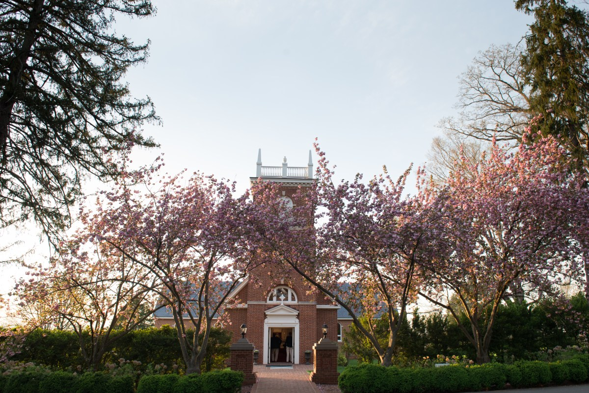

St. Andrew's Chapel
Woodberry Forest
The building was originally funded through the efforts of Woodberry's first student organization, the Missionary Society, which hosted fundraising events and enlisted donors.

Recent Sermons
Here are the most recent chapel sermons from St. Andrew's Chapel